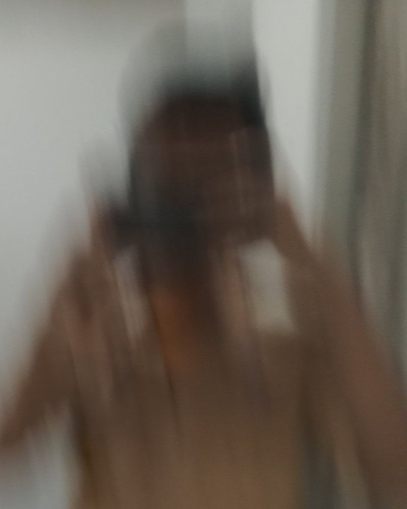
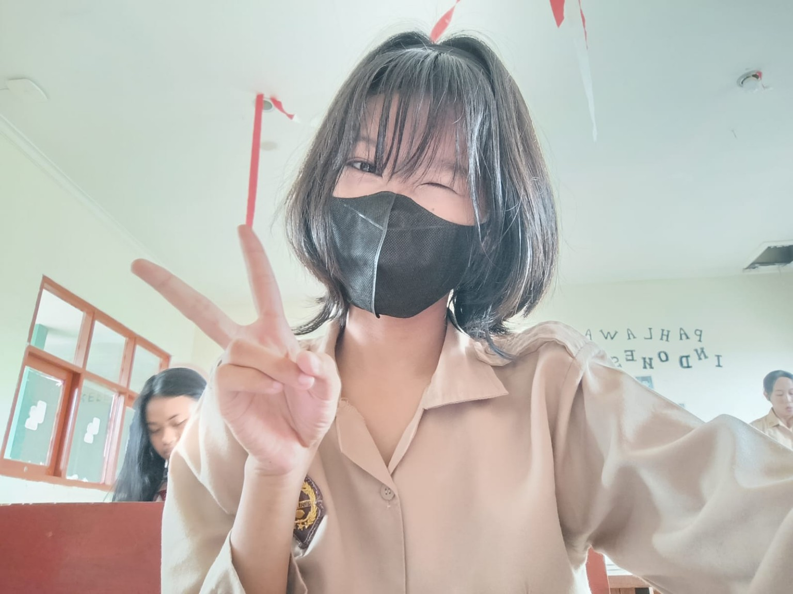

Ndrexan
Desainer, fotografer, dan pembuat website.
Saya Andre Arshavin, berasal dari Tangerang Selatan dan bersekolah di SMKN 4 Tangsel jurusan DKV. Skill saya fotografi, desain, dan pembuatan website.
Terbuka untuk proyekTangsel · --.-- WIB

Tentang saya
Saya mulai suka dalam bidang editing, desain, maupun build web karena satu orang yang selalu memotivasi saya untuk terus mengasah kemampuan saya, dan karena itu saya juga memiliki banyak pengalaman.
- Lokasi
- Tangerang Selatan
- Jurusan
- DKV, SMKN 4 Tangsel
- Fokus
- Desain, fotografi, website
Skill
Desain
Tampilan yang rapi dan punya sikap. Antarmuka, poster, dan identitas visual.
Fotografi
Komposisi dan cahaya dulu, editing belakangan.
Build Web
Website ringan yang ditulis langsung dengan HTML, CSS, dan JavaScript, lalu diluncurkan lewat Vercel.
MY PROJECT
ECObike
Website simulasi sewa sepeda listrik per jam di Tangerang Selatan. Pengunjung memilih titik ambil, jenis sepeda, jadwal, dan metode bayar, lalu mendapat tiket QR. Proyek kelompok 7, ditulis dengan HTML, CSS, dan JavaScript.
Buka websiteDesain
Poster, wallpaper, dan ilustrasi. Geser atau klik untuk memperbesar.
Fotografi
Beberapa jepretan saya. Geser atau klik untuk memperbesar.
Ada proyek? Ngobrol dulu.
andrearshavinkece73@gmail.comThe Motivator
